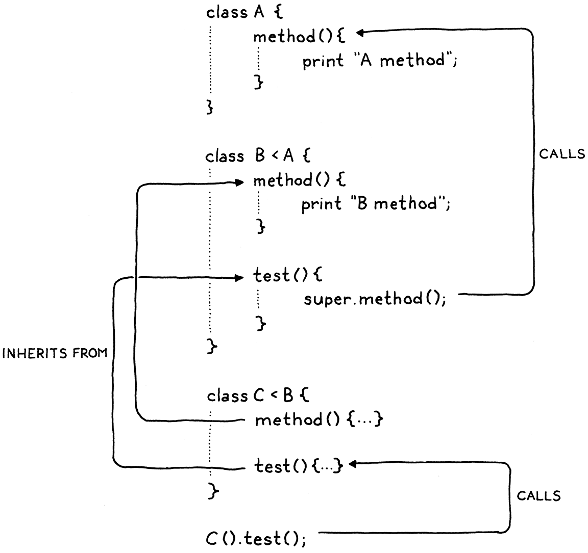

Inheritance
Ngày xưa chúng ta chỉ là những khối nhầy dưới biển, rồi thành cá, rồi thành thằn lằn, chuột, khỉ và hàng trăm thứ ở giữa. Bàn tay này từng là một cái vây, bàn tay này từng có móng vuốt! Trong miệng con người của tôi có răng nanh của sói, răng cửa của thỏ và răng hàm của bò! Máu của chúng ta mặn như biển nơi ta từng sống! Khi sợ hãi, lông trên da ta dựng đứng, y như khi ta còn có bộ lông. Chúng ta là lịch sử! Mọi thứ ta từng là trên con đường trở thành chính mình, ta vẫn còn mang trong người.
Terry Pratchett, A Hat Full of Sky
Bạn tin được không? Chúng ta đã đến chương cuối của Phần II. Chỉ còn chút nữa là xong chiếc interpreter Lox đầu tiên. Chương trước là một mớ các tính năng hướng đối tượng đan xen nhau. Tôi không thể tách rời chúng, nhưng cũng gỡ được một phần. Trong chương này, ta sẽ hoàn thiện hỗ trợ class của Lox bằng cách thêm tính năng kế thừa.
Kế thừa xuất hiện trong các ngôn ngữ hướng đối tượng từ tận ngôn ngữ đầu tiên, Simula. Ngay từ đầu, Kristen Nygaard và Ole-Johan Dahl đã nhận ra những điểm chung giữa các class trong các chương trình mô phỏng họ viết. Kế thừa cho họ một cách để tái sử dụng code cho những phần tương tự đó.
13 . 1Superclass & Subclass
Với khái niệm là “kế thừa”, hẳn bạn sẽ mong họ chọn một ẩn dụ nhất quán và gọi chúng là class “cha” và “con”, nhưng đời không đơn giản vậy. Từ lâu, C. A. R. Hoare đã đặt ra thuật ngữ “subclass” để chỉ một kiểu record tinh chỉnh từ một kiểu khác. Simula mượn thuật ngữ đó để chỉ một class kế thừa từ class khác. Tôi nghĩ phải đến khi Smalltalk xuất hiện thì ai đó mới đảo tiền tố Latin để có “superclass” chỉ phía còn lại của mối quan hệ. Trong C++, bạn cũng sẽ nghe “base” và “derived” class. Tôi sẽ chủ yếu dùng “superclass” và “subclass”.
Bước đầu tiên để hỗ trợ kế thừa trong Lox là có cách chỉ định superclass khi khai báo class. Cú pháp cho việc này rất đa dạng. C++ và C# đặt dấu : sau tên subclass, theo sau là tên superclass. Java dùng extends thay cho dấu hai chấm. Python đặt superclass (hoặc các superclass) trong ngoặc đơn sau tên class. Simula đặt tên superclass trước từ khóa class.
Ở giai đoạn này, tôi không muốn thêm từ khóa hay token mới vào lexer. Ta không có extends hay :, nên sẽ theo Ruby và dùng dấu nhỏ hơn (<).
class Doughnut { // Mấy thứ chung của doughnut... } class BostonCream < Doughnut { // Mấy thứ riêng của Boston Cream... }
Để đưa điều này vào grammar, ta thêm một mệnh đề tùy chọn mới vào rule classDecl hiện có.
classDecl → "class" IDENTIFIER ( "<" IDENTIFIER )? "{" function* "}" ;
Sau tên class, bạn có thể có < theo sau là tên superclass. Mệnh đề superclass là tùy chọn vì bạn không bắt buộc phải có superclass. Không giống một số ngôn ngữ hướng đối tượng khác như Java, Lox không có class gốc “Object” mà mọi thứ kế thừa từ đó, nên khi bạn bỏ qua mệnh đề superclass, class sẽ không có superclass nào, kể cả ngầm định.
Ta muốn lưu cú pháp mới này trong AST node của khai báo class.
"Block : List<Stmt> statements",
in main()
replace 1 line
"Class : Token name, Expr.Variable superclass," + " List<Stmt.Function> methods",
"Expression : Expr expression",
Có thể bạn sẽ ngạc nhiên khi thấy ta lưu tên superclass dưới dạng Expr.Variable, không phải Token. Grammar giới hạn mệnh đề superclass chỉ là một identifier, nhưng ở runtime, identifier đó được đánh giá như một truy cập biến. Việc bọc tên trong Expr.Variable ngay từ parser cho ta một object mà resolver có thể gắn thông tin resolution vào.
Code parser mới bám sát grammar.
Token name = consume(IDENTIFIER, "Expect class name.");
in classDeclaration()
Expr.Variable superclass = null;
if (match(LESS)) {
consume(IDENTIFIER, "Expect superclass name.");
superclass = new Expr.Variable(previous());
}
consume(LEFT_BRACE, "Expect '{' before class body.");
Khi đã (có thể) parse xong khai báo superclass, ta lưu nó vào AST.
consume(RIGHT_BRACE, "Expect '}' after class body.");
in classDeclaration()
replace 1 line
return new Stmt.Class(name, superclass, methods);
}
Nếu ta không parse mệnh đề superclass, biểu thức superclass sẽ là null. Ta sẽ phải đảm bảo các bước xử lý sau đó kiểm tra điều này. Bước đầu tiên trong số đó là resolver.
define(stmt.name);
in visitClassStmt()
if (stmt.superclass != null) {
resolve(stmt.superclass);
}
beginScope();
Node AST của khai báo class giờ có thêm một biểu thức con mới, nên ta sẽ duyệt vào và resolve nó. Vì class thường được khai báo ở cấp cao nhất, tên superclass nhiều khả năng sẽ là một biến toàn cục, nên bước này thường không làm gì đáng kể. Tuy nhiên, Lox cho phép khai báo class ngay cả bên trong block, nên hoàn toàn có thể tên superclass sẽ tham chiếu tới một biến cục bộ. Trong trường hợp đó, ta cần đảm bảo nó được resolve.
Vì ngay cả lập trình viên có ý tốt đôi khi cũng viết code kỳ quặc, nên có một edge case ngớ ngẩn mà ta cần để ý khi đang ở đây. Xem thử ví dụ này:
class Oops < Oops {}
Không có cách nào để đoạn này làm được điều gì hữu ích, và nếu để runtime chạy, nó sẽ phá vỡ giả định của interpreter rằng chuỗi kế thừa không có vòng lặp. Cách an toàn nhất là phát hiện trường hợp này ngay từ lúc compile và báo lỗi.
define(stmt.name);
in visitClassStmt()
if (stmt.superclass != null && stmt.name.lexeme.equals(stmt.superclass.name.lexeme)) { Lox.error(stmt.superclass.name, "A class can't inherit from itself."); }
if (stmt.superclass != null) {
Giả sử code resolve xong mà không có lỗi, AST sẽ được chuyển sang interpreter.
public Void visitClassStmt(Stmt.Class stmt) {
in visitClassStmt()
Object superclass = null; if (stmt.superclass != null) { superclass = evaluate(stmt.superclass); if (!(superclass instanceof LoxClass)) { throw new RuntimeError(stmt.superclass.name, "Superclass must be a class."); } }
environment.define(stmt.name.lexeme, null);
Nếu class có biểu thức superclass, ta sẽ evaluate nó. Vì kết quả có thể là một loại object khác, ta phải kiểm tra ở runtime để đảm bảo thứ ta muốn làm superclass thực sự là một class. Sẽ có chuyện tồi tệ nếu ta cho phép code như:
var NotAClass = "I am totally not a class"; class Subclass < NotAClass {} // ?!
Giả sử kiểm tra đó vượt qua, ta tiếp tục. Việc execute một khai báo class sẽ biến biểu diễn cú pháp của class — AST node của nó — thành biểu diễn runtime, một object LoxClass. Ta cũng cần truyền superclass vào đó. Ta chuyển superclass vào constructor.
methods.put(method.name.lexeme, function);
}
in visitClassStmt()
replace 1 line
LoxClass klass = new LoxClass(stmt.name.lexeme, (LoxClass)superclass, methods);
environment.assign(stmt.name, klass);
Constructor sẽ lưu nó vào một field.
constructor LoxClass()
replace 1 line
LoxClass(String name, LoxClass superclass, Map<String, LoxFunction> methods) { this.superclass = superclass;
this.name = name;
Và ta khai báo field đó ở đây:
final String name;
in class LoxClass
final LoxClass superclass;
private final Map<String, LoxFunction> methods;
Vậy là ta đã có thể định nghĩa class là subclass của class khác. Giờ, việc có một superclass thực sự làm được gì?
13 . 2Kế thừa method (Inheriting Methods)
Kế thừa từ một class khác nghĩa là mọi thứ đúng với superclass thì cũng nên đúng, ít nhiều, với subclass. Trong các ngôn ngữ kiểu tĩnh, điều này kéo theo nhiều hệ quả. Subclass cũng phải là subtype, và layout bộ nhớ được kiểm soát sao cho bạn có thể truyền một instance của subclass vào một hàm nhận superclass và nó vẫn truy cập đúng các field được kế thừa.
Lox là ngôn ngữ kiểu động, nên yêu cầu của ta đơn giản hơn nhiều. Về cơ bản, nó nghĩa là nếu bạn có thể gọi một method trên instance của superclass, thì bạn cũng nên có thể gọi method đó khi được đưa một instance của subclass. Nói cách khác, method được kế thừa từ superclass.
Điều này phù hợp với một trong những mục tiêu của kế thừa — cho người dùng cách tái sử dụng code giữa các class. Việc implement điều này trong interpreter của ta lại dễ đến bất ngờ.
return methods.get(name);
}
in findMethod()
if (superclass != null) { return superclass.findMethod(name); }
return null;
Đó thực sự là tất cả. Khi ta tìm method trên một instance, nếu không thấy ở class của instance đó, ta đệ quy đi lên chuỗi superclass và tìm ở đó. Thử xem:
class Doughnut { cook() { print "Fry until golden brown."; } } class BostonCream < Doughnut {} BostonCream().cook();
Vậy là xong, một nửa tính năng kế thừa đã hoàn thiện chỉ với ba dòng Java code.
13 . 3Gọi method của superclass (Calling Superclass Methods)
Trong findMethod() chúng ta tìm method trên class hiện tại trước khi đi lên chuỗi superclass. Nếu một method cùng tên tồn tại ở cả subclass và superclass, method ở subclass sẽ được ưu tiên hay còn gọi là override method của superclass. Tương tự như cách biến trong scope trong che khuất biến ở scope ngoài.
Điều đó rất tuyệt nếu subclass muốn thay thế hoàn toàn một hành vi của superclass. Nhưng trên thực tế, subclass thường muốn tinh chỉnh hành vi của superclass. Chúng muốn làm thêm một chút việc đặc thù cho subclass, nhưng cũng muốn execute phần hành vi gốc của superclass.
Tuy nhiên, vì subclass đã override method, nên không còn cách nào tham chiếu đến bản gốc. Nếu method của subclass cố gọi nó theo tên, nó sẽ đệ quy trúng chính bản override của mình. Ta cần một cách để nói “Gọi method này, nhưng tìm nó trực tiếp trên superclass của tôi và bỏ qua bản override của tôi”. Java dùng super cho việc này, và ta sẽ dùng cùng cú pháp trong Lox. Ví dụ:
class Doughnut { cook() { print "Fry until golden brown."; } } class BostonCream < Doughnut { cook() { super.cook(); print "Pipe full of custard and coat with chocolate."; } } BostonCream().cook();
Chạy đoạn này, bạn sẽ thấy in ra:
Fry until golden brown. Pipe full of custard and coat with chocolate.
Ta có một dạng expression mới. Từ khóa super, theo sau bởi dấu chấm và một identifier, sẽ tìm method có tên đó. Khác với các lời gọi trên this, quá trình tìm kiếm bắt đầu từ superclass.
13 . 3 . 1Cú pháp
Với this, từ khóa này hoạt động như một biến “ma thuật”, và expression chỉ là đúng một token đó. Nhưng với super, dấu . và tên thuộc tính phía sau là các phần không thể tách rời của expression super. Bạn không thể có một token super đứng riêng một mình.
print super; // Syntax error.
Vì vậy, mệnh đề mới mà ta thêm vào rule primary trong grammar cũng bao gồm phần truy cập thuộc tính.
primary → "true" | "false" | "nil" | "this" | NUMBER | STRING | IDENTIFIER | "(" expression ")" | "super" "." IDENTIFIER ;
Thông thường, một expression super được dùng để gọi method, nhưng, giống như với method thông thường, danh sách đối số không thuộc về expression. Thay vào đó, một lời gọi super là một truy cập super theo sau bởi lời gọi function. Giống như các lời gọi method khác, bạn có thể lấy một “handle” tới method của superclass và gọi nó riêng.
var method = super.cook; method();
Vì thế, bản thân expression super chỉ chứa token cho từ khóa super và tên method đang được tìm. Node cây cú pháp tương ứng syntax tree node như sau:
"Set : Expr object, Token name, Expr value",
in main()
"Super : Token keyword, Token method",
"This : Token keyword",
Theo đúng grammar, code parse mới sẽ nằm trong method primary() hiện có của chúng ta.
return new Expr.Literal(previous().literal);
}
in primary()
if (match(SUPER)) {
Token keyword = previous();
consume(DOT, "Expect '.' after 'super'.");
Token method = consume(IDENTIFIER,
"Expect superclass method name.");
return new Expr.Super(keyword, method);
}
if (match(THIS)) return new Expr.This(previous());
Một từ khóa super ở đầu cho ta biết ta đang gặp một expression super. Sau đó ta consume dấu . và tên method như kỳ vọng.
13 . 3 . 2Ngữ nghĩa
Trước đó, tôi nói một expression super sẽ bắt đầu việc tìm method từ “superclass”, nhưng là superclass nào? Câu trả lời ngây thơ là superclass của this, object mà method bao quanh được gọi trên đó. Tình cờ thì điều đó cho ra hành vi đúng trong nhiều trường hợp, nhưng thực ra lại không chính xác. Hãy thử nhìn:
class A { method() { print "A method"; } } class B < A { method() { print "B method"; } test() { super.method(); } } class C < B {} C().test();
Hãy dịch chương trình này sang Java, C# hoặc C++ và nó sẽ in ra "A method", đúng như điều ta muốn Lox cũng làm. Khi chương trình này chạy, bên trong thân hàm test(), this là một instance của C. Superclass của C là B, nhưng đó không phải nơi quá trình tìm kiếm nên bắt đầu. Nếu làm vậy, ta sẽ gặp method() của B.
Thay vào đó, quá trình tìm kiếm nên bắt đầu từ superclass của class chứa biểu thức super. Trong trường hợp này, vì test() được định nghĩa bên trong B, nên biểu thức super bên trong nó phải bắt đầu tìm kiếm từ superclass của B — tức A.

Vì vậy, để evaluate một biểu thức super, ta cần truy cập tới superclass của định nghĩa class bao quanh lời gọi đó. Tiếc thay, tại thời điểm trong interpreter khi ta đang execute một biểu thức super, ta lại không dễ dàng có được thông tin này.
Ta có thể thêm một field vào LoxFunction để lưu tham chiếu tới LoxClass sở hữu method đó. Interpreter sẽ giữ tham chiếu tới LoxFunction đang execute để ta có thể tra cứu sau khi gặp một biểu thức super. Từ đó, ta sẽ lấy được LoxClass của method, rồi tới superclass của nó.
Như vậy là khá nhiều “đường ống” phải lắp. Trong chương trước, ta cũng gặp vấn đề tương tự khi cần hỗ trợ this. Khi đó, ta đã dùng cơ chế environment và closure sẵn có để lưu tham chiếu tới object hiện tại. Liệu ta có thể làm điều tương tự để lưu superclass? Chắc tôi sẽ không nói đến nếu câu trả lời là “không”, nên… câu trả lời là “có”.
Một điểm khác biệt quan trọng là ta bind this khi method được truy cập. Cùng một method có thể được gọi trên các instance khác nhau và mỗi instance cần this riêng. Với biểu thức super, superclass là một thuộc tính cố định của chính khai báo class. Mỗi lần bạn evaluate một biểu thức super, superclass luôn giống nhau.
Điều đó có nghĩa là ta có thể tạo environment cho superclass một lần, khi class được định nghĩa. Ngay trước khi định nghĩa các method, ta tạo một environment mới để bind superclass của class vào tên super.

Khi ta tạo biểu diễn runtime LoxFunction cho mỗi method, đó sẽ là environment mà chúng capture trong closure của mình. Sau này, khi một method được gọi và this được bind, environment của superclass sẽ trở thành cha của environment của method, như thế này:
Nghe có vẻ nhiều cơ chế, nhưng ta sẽ xử lý từng bước một. Trước khi tạo environment ở runtime, ta cần xử lý chuỗi scope tương ứng trong resolver.
resolve(stmt.superclass);
}
in visitClassStmt()
if (stmt.superclass != null) {
beginScope();
scopes.peek().put("super", true);
}
beginScope();
Nếu khai báo class có superclass, ta tạo một scope mới bao quanh tất cả method của nó. Trong scope đó, ta định nghĩa tên "super". Khi resolve xong các method của class, ta bỏ scope đó đi.
endScope();
in visitClassStmt()
if (stmt.superclass != null) endScope();
currentClass = enclosingClass;
Đây là một tối ưu nhỏ, nhưng ta chỉ tạo environment của superclass nếu class thực sự có superclass. Không có lý do gì tạo nó khi không có superclass, vì sẽ chẳng có gì để lưu vào đó.
Với "super" đã được định nghĩa trong chuỗi scope, ta có thể resolve chính biểu thức super.
add after visitSetExpr()
@Override public Void visitSuperExpr(Expr.Super expr) { resolveLocal(expr, expr.keyword); return null; }
Ta resolve token super giống hệt như một biến. Quá trình resolve sẽ lưu số bước nhảy trong chuỗi environment mà interpreter cần đi để tìm environment nơi lưu superclass.
Phần code này được phản chiếu trong interpreter. Khi evaluate một định nghĩa subclass, ta tạo một environment mới.
throw new RuntimeError(stmt.superclass.name,
"Superclass must be a class.");
}
}
environment.define(stmt.name.lexeme, null);
in visitClassStmt()
if (stmt.superclass != null) {
environment = new Environment(environment);
environment.define("super", superclass);
}
Map<String, LoxFunction> methods = new HashMap<>();
Bên trong environment đó, ta lưu tham chiếu tới superclass — chính object LoxClass của superclass mà ta đã có ở runtime. Sau đó, ta tạo các LoxFunction cho từng method. Chúng sẽ capture environment hiện tại — nơi ta vừa bind "super" — làm closure của mình, giữ lại superclass như ta cần. Khi xong, ta pop environment.
LoxClass klass = new LoxClass(stmt.name.lexeme,
(LoxClass)superclass, methods);
in visitClassStmt()
if (superclass != null) {
environment = environment.enclosing;
}
environment.assign(stmt.name, klass);
Giờ ta đã sẵn sàng để interpret các biểu thức super. Có vài phần chuyển động, nên ta sẽ xây dựng method này từng bước.
add after visitSetExpr()
@Override public Object visitSuperExpr(Expr.Super expr) { int distance = locals.get(expr); LoxClass superclass = (LoxClass)environment.getAt( distance, "super"); }
Trước hết, phần việc mà ta đã chuẩn bị từ đầu đến giờ: ta tra cứu superclass của class bao quanh bằng cách tìm "super" trong environment thích hợp.
Khi truy cập một method, ta cũng cần bind this tới object mà method được truy cập từ đó. Trong một biểu thức như doughnut.cook, object chính là kết quả của việc evaluate doughnut. Trong một biểu thức super như super.cook, object hiện tại ngầm định là cùng object hiện tại mà ta đang dùng — nói cách khác là this. Dù ta đang tìm method trên superclass, instance vẫn là this.
Không may là bên trong biểu thức super, ta không có một node tiện lợi để resolver gắn số bước nhảy tới this. May mắn là ta kiểm soát được cấu trúc chuỗi environment. Environment nơi "this" được bind luôn nằm ngay bên trong environment nơi ta lưu "super".
LoxClass superclass = (LoxClass)environment.getAt(
distance, "super");
in visitSuperExpr()
LoxInstance object = (LoxInstance)environment.getAt(
distance - 1, "this");
}
Cộng thêm một bước nhảy sẽ tìm "this" trong environment bên trong đó. Tôi thừa nhận đây không phải là đoạn code thanh nhã nhất, nhưng nó hoạt động.
Giờ ta đã sẵn sàng để tìm và bind method, bắt đầu từ superclass.
LoxInstance object = (LoxInstance)environment.getAt(
distance - 1, "this");
in visitSuperExpr()
LoxFunction method = superclass.findMethod(expr.method.lexeme);
return method.bind(object);
}
Phần này gần như giống hệt code tìm method của một get expression, chỉ khác là ta gọi findMethod() trên superclass thay vì trên class của object hiện tại.
Về cơ bản là vậy. Tất nhiên, vẫn có khả năng ta không tìm thấy method, nên ta cũng kiểm tra trường hợp đó.
LoxFunction method = superclass.findMethod(expr.method.lexeme);
in visitSuperExpr()
if (method == null) {
throw new RuntimeError(expr.method,
"Undefined property '" + expr.method.lexeme + "'.");
}
return method.bind(object); }
Vậy là xong! Lấy lại ví dụ BostonCream ở trên và thử chạy. Nếu bạn và tôi làm đúng hết, nó sẽ chiên trước, rồi nhồi kem vào.
13 . 3 . 3Các cách dùng super không hợp lệ
Giống như các tính năng ngôn ngữ trước, implement của ta hoạt động đúng khi người dùng viết code đúng, nhưng ta chưa “bọc thép” interpreter chống lại code sai. Cụ thể, hãy xem:
class Eclair { cook() { super.cook(); print "Pipe full of crème pâtissière."; } }
Class này có một biểu thức super, nhưng không có superclass. Ở runtime, code evaluate biểu thức super giả định rằng "super" đã được resolve thành công và sẽ tìm thấy trong environment. Điều đó sẽ thất bại ở đây vì không có environment bao quanh cho superclass — do không có superclass. JVM sẽ ném ra exception và “quật ngã” interpreter của ta.
Thậm chí còn có những cách dùng super hỏng hóc đơn giản hơn:
super.notEvenInAClass();
Ta có thể xử lý các lỗi này ở runtime bằng cách kiểm tra xem việc tra cứu "super" có thành công không. Nhưng ta có thể biết ngay từ lúc compile — chỉ cần nhìn vào source code — rằng Eclair không có superclass và do đó không biểu thức super nào hoạt động bên trong nó. Tương tự, ở ví dụ thứ hai, ta biết biểu thức super thậm chí không nằm trong thân một method.
Dù Lox là ngôn ngữ kiểu động, điều đó không có nghĩa là ta muốn dời mọi thứ sang runtime. Nếu người dùng mắc lỗi, ta muốn giúp họ phát hiện sớm hơn. Vậy nên ta sẽ báo các lỗi này ngay từ lúc compile, trong resolver.
Đầu tiên, ta thêm một case mới vào enum dùng để theo dõi loại class bao quanh đoạn code hiện tại đang được duyệt.
NONE,
CLASS,
in enum ClassType
add “,” to previous line
SUBCLASS
}
Ta sẽ dùng nó để phân biệt khi nào ta đang ở trong một class có superclass và khi nào thì không. Khi resolve một khai báo class, ta sẽ set giá trị này nếu class là một subclass.
if (stmt.superclass != null) {
in visitClassStmt()
currentClass = ClassType.SUBCLASS;
resolve(stmt.superclass);
Sau đó, khi resolve một biểu thức super, ta kiểm tra xem ta có đang ở trong scope cho phép điều đó hay không.
public Void visitSuperExpr(Expr.Super expr) {
in visitSuperExpr()
if (currentClass == ClassType.NONE) { Lox.error(expr.keyword, "Can't use 'super' outside of a class."); } else if (currentClass != ClassType.SUBCLASS) { Lox.error(expr.keyword, "Can't use 'super' in a class with no superclass."); }
resolveLocal(expr, expr.keyword);
Nếu không — ôi thôi! — người dùng đã mắc lỗi.
13 . 4Kết luận
Chúng ta đã làm được! Phần xử lý lỗi cuối cùng này là mảnh ghép cuối để hoàn thiện implement Lox bằng Java. Đây thực sự là một thành tựu mà bạn nên tự hào. Trong khoảng chục chương vừa qua và hơn một nghìn dòng code, chúng ta đã học và implement…
- token và lexer,
- abstract syntax tree,
- recursive descent parser,
- biểu thức prefix và infix,
- biểu diễn runtime của object,
- execute code bằng Visitor pattern,
- lexical scope,
- chuỗi environment để lưu biến,
- control flow,
- hàm với tham số,
- closure,
- resolve biến tĩnh và phát hiện lỗi,
- class,
- constructor,
- field,
- method, và cuối cùng,
- kế thừa.
Ta đã làm tất cả từ con số 0, không phụ thuộc vào thư viện ngoài hay công cụ “ma thuật” nào. Chỉ có bạn và tôi, mỗi người với trình soạn thảo của mình, vài class collection trong Java standard library, và JVM runtime.
Đây là dấu mốc kết thúc Phần II, nhưng chưa phải là hết sách. Hãy nghỉ ngơi một chút. Có thể viết vài chương trình Lox vui vẻ và chạy chúng trong interpreter của bạn. (Bạn có thể muốn thêm vài native method nữa, như đọc input từ người dùng.) Khi đã sẵn sàng, ta sẽ bắt đầu cuộc phiêu lưu tiếp theo.
13 . 5Thử thách
-
Lox chỉ hỗ trợ kế thừa đơn — một class chỉ có thể có một superclass và đó là cách duy nhất để tái sử dụng method giữa các class. Các ngôn ngữ khác đã khám phá nhiều cách khác nhau để tái sử dụng và chia sẻ khả năng giữa các class một cách linh hoạt hơn: mixin, trait, multiple inheritance, virtual inheritance, extension method, v.v.
Nếu bạn muốn thêm một tính năng nào đó theo hướng này vào Lox, bạn sẽ chọn gì và tại sao? Nếu bạn cảm thấy đủ can đảm (và đến giờ thì bạn nên như vậy), hãy thử thêm nó vào.
-
Trong Lox, cũng như hầu hết các ngôn ngữ hướng đối tượng khác, khi tìm một method, ta bắt đầu từ đáy của cây kế thừa và đi ngược lên — method của subclass sẽ được ưu tiên hơn method của superclass. Để gọi method của superclass từ bên trong một method override, bạn dùng
super.Ngôn ngữ BETA lại tiếp cận theo hướng ngược lại. Khi bạn gọi một method, nó bắt đầu từ đỉnh của cây kế thừa và đi xuống. Method của superclass sẽ thắng method của subclass. Để gọi method của subclass, method của superclass có thể gọi
inner, về cơ bản là nghịch đảo củasuper. Nó sẽ nối chuỗi tới method tiếp theo bên dưới trong cây kế thừa.Method của superclass sẽ kiểm soát khi nào và ở đâu subclass được phép tinh chỉnh hành vi của nó. Nếu method của superclass không gọi
innerchút nào, thì subclass sẽ không thể override hoặc thay đổi hành vi của superclass.Hãy bỏ cơ chế override và
superhiện tại của Lox và thay bằng ngữ nghĩa của BETA. Tóm tắt:-
Khi gọi một method trên một class, ưu tiên method cao nhất trong chuỗi kế thừa của class đó.
-
Bên trong thân một method, lời gọi
innersẽ tìm method cùng tên trong subclass gần nhất dọc theo chuỗi kế thừa, nằm giữa class chứainnervà class củathis. Nếu không có method khớp, lời gọiinnersẽ không làm gì.
Ví dụ:
class Doughnut { cook() { print "Fry until golden brown."; inner(); print "Place in a nice box."; } } class BostonCream < Doughnut { cook() { print "Pipe full of custard and coat with chocolate."; } } BostonCream().cook();
Kết quả in ra sẽ là:
Fry until golden brown. Pipe full of custard and coat with chocolate. Place in a nice box.
-
-
Trong chương giới thiệu về Lox, tôi đã thách bạn nghĩ ra một vài tính năng mà bạn cho là ngôn ngữ này còn thiếu. Giờ khi bạn đã biết cách xây dựng một interpreter, hãy implement một trong những tính năng đó.